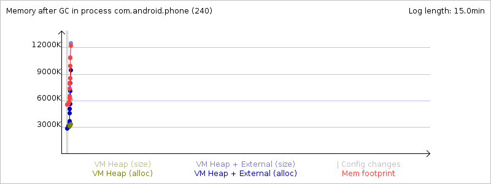

Mem info from 'meminfo' service:
** MEMINFO in pid 240 [com.android.phone] **
native dalvik other total
size: 9736 6343 N/A 16079
allocated: 9656 3896 N/A 13552
free: 15 2447 N/A 2462
(Pss): 3100 2378 8349 13827
(shared dirty): 956 1684 5168 7808
(priv dirty): 3064 624 7720 11408
Objects
Views: 0 ViewRoots: 0
AppContexts: 0 Activities: 0
Assets: 4 AssetManagers: 4
Local Binders: 39 Proxy Binders: 40
Death Recipients: 1
OpenSSL Sockets: 0
SQL
heap: 240 MEMORY_USED: 240
PAGECACHE_OVERFLOW: 38 MALLOC_SIZE: 50
DATABASES
pgsz dbsz Lookaside(b) Dbname
1 11 25 firewall.db
1 40 165 mmssms.db
Memory usage from GC event logs:
